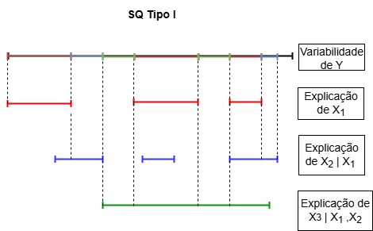
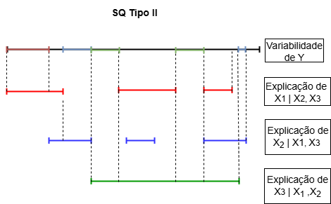

Vamos iniciar essa aula pelo teste F global da ANOVA e pelo teste t que avalia a contribuição de cada parâmetro do modelo. Na sequência, discutiremos sobre a contribuição de variáveis explicativas em um MRLM, o que pode ser visto como um problema de comparação de modelos. Nesse contexto, será importante apresentar o conceito de redução de somas de quadrados (SQ) e apresentar os dois tipos de SQ adotadas na análise de modelos de regressão linear: a sequencial (tipo I) e a parcial (tipo II).
Essa aula é baseada, principalmente, no capítulo 3 da Apostila de Recursos Computacionais utilizando o R (Ferreira, 2013), no capítulo 8 de Charnet et al. (2008) e no capítulo 7 de Kutner et al. (2004).
8.1 Testes relacionados aos coeficientes de um MRL
Vimos que uma tabela de Análise de Variância (ANOVA) resume quantidades que decorrem da partição da soma de quadrados total (SQ) e graus de liberdade associados à variável resposta \(Y\). Em um primeiro momento, usamos essas quantidades para testar a significância geral do MRL, ou seja, para saber e há uma regressão entre a resposta \(Y\) e o conjunto de variáveis expicativas \(X\).
8.1.1 O teste F global
O teste F global da ANOVA avalia se todos os \(\beta_{j} =0\), ou seja,
\[
\left\{
\begin{array}{l}
H_0: \beta_1 = \beta_2 = \ldots = \beta_k = 0 \\
H_a: \beta_j \ne 0 \mbox{, para pelo menos um } j \mbox{, com } j = 1,2, \ldots, k
\end{array} \right.
\]
e a estatística teste é
\[
F_c = \dfrac{QMReg}{QMErro}
\]
que, sob \(H_{0}\), segue uma distribuição \(F(\nu_1 = k; \nu_2 = n-k-1)\). Grandes valores de \(F_{c}\) levam à rejeição de \(H_{0}\) a favor de \(H_{a}\).
8.1.2 Teste para um \(\beta_{j}\) individual
Especialmente em regressão linear múltipla, podemos estar interessados em verificar se a contribuição de uma particular regressora, \(X_j\), \(j = 1, 2, 3, \dots, k\), é significativa ou não\(^1\).
\(^1\) p. 185, Charnet et al. (2008)
A contribuição de \(X_j\) no MRLM é verificada através do teste das seguintes hipóteses:
a qual, sob \(H_0\), tem distribuição \(t_{(n-k-1)}\):
\(^2\) A estatística é a quantidade pivotal vista na aula de estimação (Estimação em Modelos de Regressão Linear). Essa quantidade também foi usada na definição de intervalos de confiaça para \(\beta_j\).
Na estatística, \(C_{j+1,j+1}\) é o \((j+1)\)-ésimo elemento da diagonal principal de \((\mathbf{X'X})^{-1}\). O Quadrado Médio do Erro (QME) obtido no ajuste de um MRL e disposto na ANOVA é um estimador de \(\sigma^{2}\), ou seja, é \(\widehat{\sigma^2}\).
Portanto, para um nível de significância \(\alpha\), rejeitamos a hipótese de que a contribuição da regressora não é significativa (\(H_0\)), se
Alternativamente, usando o resultado de que a distribuição do quadrado de variável aleatória com distribuição t de Student com \(n\) graus de liberdade é uma variável com distribuição F com 1 e \(n\) graus de liberdade, rejeitamos \(H_0\), se
\[
T_{\beta_j}^2 \geq F_{1,(n-k-1)}(\alpha),
\]
sendo \(F_{1,(n-k-1)}(\alpha)\) o quantil \((1 - \alpha)\) de distribuição F com 1 e \((n - k - 1)\) graus de liberdade.
Esse é um teste F parcial para verificar se um coeficiente de regressão \(\beta_{j}\) em particular é igual a 0. Como ambos os testes t e F são equivalentes, a escolha é feita com base na disponibilidade da informação fornecida pelo recurso computacional utilizado (pelo output do comando ou pacote).
8.2 Reduções nas somas de quadrados e comparação de modelos
O teste da contribuição de uma variável regressora visto na seção anterior corresponde, na essência, a uma comparação entre dois modelos: um modelo completo, correpondendo ao modelo com todos os parâmetros, e um modelo reduzido.
Por exemplo:
Na descrição de uma relação entre duas variáveis em uma situação particular, devemos escolher uma reta ou uma parábola?
\[
Y = \beta_0 + \beta_1 x + \varepsilon
\]
ou
\[
Y = \beta_0 + \beta_1 x + \beta_2 x^2 + \varepsilon \, ?
\]
Ao comparar o modelo completo com um reduzido estamos avaliando se vale a pena acrescentar termos extras na parte sistemática do modelo. Sempre que fazemos isso, aumentamos a \(SQReg\) e diminuímos a \(SQErro\), mas resta saber se tal aumento (ou redução) é significativa. Em outras palavras, precisamos verificar se os termos extras contribuem para a melhor descrição da variável \(Y\). Caso contrário, por parcimônia, devemos optar pelo modelo reduzido.
p. 186 e 187, Charnet et al. (2008)
Uma soma de quadrados extra mede a redução na soma de quadrados do erro (\(SQErro\)) quando uma ou mais variáveis são adicionadas ao modelo de regressão, dado que outras variáveis já estão no modelo. De forma equivalente, podemos ver uma soma de quadrados extra como o aumento na soma de quadrados da regressão (\(SQReg\)) quando uma ou mais variáveis explicativas são adicionadas ao modelo de regressão (Kutner et al., 2004).
Considere um MRL para descrever \(Y\) em função de duas variáveis expicativas, \(X_{1}\) e \(X_{2}\). Esses autores utilizam a notação \(SSR(X_{2}|X_{1})\) para denotar a soma de quadrados extra, calculada por \(SSE(X_{1}) - SSE(X_{1}, X_{2})\). Nesse caso, \(SSE(X_{1})\) é a \(SQErro\) para o modelo que contém apenas a variável \(X_{1}\) e \(SSE(X_{1}, X_{2})\) é a \(SQErro\) para o modelo que contém as variáveis \(X_{1}\) e \(X_{2}\).
Então, temos aqui o problema de definir sub-modelos a partir do modelo completo com \((k+1)\) parâmetros. Para isso, podemos definir dois tipos de somas de quadrados: a sequencial (tipo I) e a parcial (tipo II). Para a apresentação desses conceitos, vamos utilizar o material de Ferreira (2013)\(^3\) e adotar a sua notação.
\(^3\) Ferreira, D. F. (2013) Recursos Computacionais Utilizando R. p. 68-87.
Soma de quadrados sequencial
Consideremos um modelo com \(k + 1\) parâmetros. Na soma de quadrados sequencial tomamos o modelo completo e o reduzimos eliminando a variável \(k\). A soma de quadrados do modelo completo é representada por \(R(\beta_{0}, \beta_{1}, \ldots, \beta_{k})\) e a do modelo reduzido é \(R(\beta_{0}, \beta_{1}, \ldots, \beta_{k-1})\), cuja notação \(R\) indica a redução particular do modelo que está sendo abordado. A diferença da soma de quadrados dos dois modelos é
\[
R(\beta_{k} | \beta_{0}, \beta_{1}, \ldots, \beta_{k-1}) = R(\beta_{0}, \beta_{1}, \ldots, \beta_{k}) - R(\beta_{0}, \beta_{1}, \ldots, \beta_{k-1}).
\] Se, do modelo com \(k-1\) variáveis eliminarmos a última e repetirmos este procedimento, teremos a soma de quadrados da \((k-1)\)-esima variável ajustada para todas as outras que a precedem. Se fizermos isso repetidas vezes até reduzirmos o modelo ao termo constante apenas, teremos as somas de quadrados de cada variável ajustada para todas as outras que a precedem, ignorando as variáveis que a sucedem.

Uma ilustração da contribuição de cada variável preditora segundo uma SQ tipo I. Fonte: Notas de aula de Daniel F. Ferreira (DES/UFLA)
Nessa situação, para que a última variável a ser incluída seja considerada significativa, ela precisa fornecer uma explicação adicional sobre a variabilidade de \(Y\) que não foi explicada por todas as variáveis anteriores.
No R, a ANOVA obtida pelo comando stats::anova contém as somas de quadrados do tipo sequencial. Por essa razão, os testes t para as contribuições individuais dos \(\beta_{j}\) obtidos no summary() podem ser incoerentes com os resultados pelo comando anova(). Esses testes t são equivalentes aos testes F da ANOVA com as somas de quadrados parciais.
Soma de quadrados parcial
Para obtermos as somas de quadrados parciais ou do tipo II, partimos do modelo completo e formamos um novo modelo eliminando uma das variáveis. A soma de quadrados do modelo reduzido é comparada com a soma de quadrado do modelo completo e a sua diferença é a soma de quadrados do tipo II. Assim, temos o ajuste de cada variável para todas as outras do modelo. A soma de quadrados na redução refere-se ao que a variável em questão acrescentou de explição sobre a variabilidade de \(Y\) que não está sendo explicado simultaneamente por todas as outras variáveis, conforme representado na Figura a seguir.

Uma ilustração da contribuição de cada variável preditora segundo uma SQ tipo II. Fonte: Notas de aula de Daniel F. Ferreira (DES/UFLA)
No R, a ANOVA com somas de quadrados parciais (tipo II) pode ser obtida pelo comando car::Anova. Os quadrados das estatísticas calculadas para os testes t para as contribuições individuais dos \(\beta_{j}\) obtidos no summary() equivalem aos testes F dos \(\beta_{j}\) da ANOVA parcial.
A Tabela a seguir foi adaptada de Ferreira (2013) e resume bem os tipos de somas de quadrados de um modelo de regressão contendo \(k\) variáveis.
As somas de quadrados tipo I e tipo II da \(k\)-ésima variável são iguais.
Uma forma simples de obter as somas de quadrados do tipo II é baseada no método da inversa de parte da inversa (Searle, 1971 e 1987). Esse método permite a obtenças dessas somas de quadrados sem que seja necessário fazer a redução de modelos. Para a variável \(X_{j}\), a soma de quadrados parcial pode ser calculada por:
\[
R(\beta_{j} | \beta_{0}, \ldots \beta_{j-1}, \beta_{j+1}, \ldots, \beta_{k}) = \frac{\hat\beta^2_{j}}{C_{j+1, j+1}},
\] em que \(C_{j+1, j+1}\) é o \((j+1)\)-ésimo elemento da diagonal principal de \((\mathbf{X'X})^{-1}\).
8.3 Um exemplo de MRLM usando R
(Adaptado de Kutner et al., 2004)
Os dados a seguir foram coletados em um estudo sobre a relação entre a quantidade de gordura corporal (\(Y\)) e várias possíveis variáveis explicativas, a partir de uma amostra de 20 mulheres saudáveis com idade entre 25 e 34 anos. As variáveis preditoras consideradas são espessura da prega cutânea do tríceps (\(X_{1}\)), circunferência da coxa (\(X_{2}\)) e circunferência do meio do braço (\(X_{3}\)). A gordura corporal para cada uma das 20 pessoas foi obtida por um procedimento caro e incômodo requerindo a imersão da pessoa na água. Então, seria muito útil se um modelo de regressão com algumas ou todas essas variáveis preditoras pudesse fornecer estimativas confiáveis da gordura corporal já que as medidas das preditoras são fáceis de obter.
8.3.1 Modelos marginais
Inicialmente, vamos ajustar os modelos marginais, ou seja, cada um deles contém apenas uma das variáveis sozinhas. Por meio desses modelos tentamos explicar a variabilidade de \(Y\) em função de uma variável preditora, ignorando a existência de outras. Vamos explicar com detalhes alguns resultados relacionados a \(X_{1}\).
modelo.x1 <-lm(gordura ~ esp.triceps, data = dados)summary(modelo.x1)
Call:
lm(formula = gordura ~ esp.triceps, data = dados)
Residuals:
Min 1Q Median 3Q Max
-6.1195 -2.1904 0.6735 1.9383 3.8523
Coefficients:
Estimate Std. Error t value Pr(>|t|)
(Intercept) -1.4961 3.3192 -0.451 0.658
esp.triceps 0.8572 0.1288 6.656 3.02e-06 ***
---
Signif. codes: 0 '***' 0.001 '**' 0.01 '*' 0.05 '.' 0.1 ' ' 1
Residual standard error: 2.82 on 18 degrees of freedom
Multiple R-squared: 0.7111, Adjusted R-squared: 0.695
F-statistic: 44.3 on 1 and 18 DF, p-value: 3.024e-06
anova(modelo.x1)
Analysis of Variance Table
Response: gordura
Df Sum Sq Mean Sq F value Pr(>F)
esp.triceps 1 352.27 352.27 44.305 3.024e-06 ***
Residuals 18 143.12 7.95
---
Signif. codes: 0 '***' 0.001 '**' 0.01 '*' 0.05 '.' 0.1 ' ' 1
Observe que, na saída do comando summary() temos o teste t para o parâmetro associado a \(X_{1}\), que podemos denotar por \(\beta_{1}\). Nesse caso, como temos um MRLS, o quadrado da estatística \(t\) calculada equivale ao teste \(F\) global, cuja estatística foi igual a 44,30. O mesmo teste aparece no resultado do comando anova(), para o efeito da regressão.
Veja que o modelo de regressão foi significativo quando consideramos a variável espessura da prega cutânea do tríceps (\(X_{1}\)), com as estimativas dos parâmetros \(\hat\beta_{0} = -1,4961\) e \(\hat\beta_{1} = 0,8572\). Na sequência, apresentamos os resultados dos modelos marginais para as outras duas variáveis, \(X_{2}\) e \(X_{3}\). A interpretação dos comandos é a mesma.
modelo.x2 <-lm(gordura ~ circ.coxa, data = dados)summary(modelo.x2)
Call:
lm(formula = gordura ~ circ.coxa, data = dados)
Residuals:
Min 1Q Median 3Q Max
-4.4949 -1.5671 0.1241 1.3362 4.4084
Coefficients:
Estimate Std. Error t value Pr(>|t|)
(Intercept) -23.6345 5.6574 -4.178 0.000566 ***
circ.coxa 0.8565 0.1100 7.786 3.6e-07 ***
---
Signif. codes: 0 '***' 0.001 '**' 0.01 '*' 0.05 '.' 0.1 ' ' 1
Residual standard error: 2.51 on 18 degrees of freedom
Multiple R-squared: 0.771, Adjusted R-squared: 0.7583
F-statistic: 60.62 on 1 and 18 DF, p-value: 3.6e-07
anova(modelo.x2)
Analysis of Variance Table
Response: gordura
Df Sum Sq Mean Sq F value Pr(>F)
circ.coxa 1 381.97 381.97 60.617 3.6e-07 ***
Residuals 18 113.42 6.30
---
Signif. codes: 0 '***' 0.001 '**' 0.01 '*' 0.05 '.' 0.1 ' ' 1
Ao considerar apenas a variável \(X_{2}\) também encontramos um efeito significativo da regressão. Por outro lado, a variável \(X_{3}\) (circunferência do meio do braço) parece não contribuir para explicar a variabilidade em \(Y\), conforme resultados apresentados a seguir.
modelo.x3 <-lm(gordura ~ circ.braco, data = dados)summary(modelo.x3)
Call:
lm(formula = gordura ~ circ.braco, data = dados)
Residuals:
Min 1Q Median 3Q Max
-8.590 -3.847 1.458 3.561 6.909
Coefficients:
Estimate Std. Error t value Pr(>|t|)
(Intercept) 14.6868 9.0959 1.615 0.124
circ.braco 0.1994 0.3266 0.611 0.549
Residual standard error: 5.193 on 18 degrees of freedom
Multiple R-squared: 0.02029, Adjusted R-squared: -0.03414
F-statistic: 0.3728 on 1 and 18 DF, p-value: 0.5491
anova(modelo.x3)
Analysis of Variance Table
Response: gordura
Df Sum Sq Mean Sq F value Pr(>F)
circ.braco 1 10.05 10.052 0.3728 0.5491
Residuals 18 485.34 26.963
Agora, vamos obter um MRLM com as variáveis \(X_{1}\) e \(X_{2}\).
modelo.x1.x2 <-lm(gordura ~ esp.triceps + circ.coxa, data = dados)summary(modelo.x1.x2)
Call:
lm(formula = gordura ~ esp.triceps + circ.coxa, data = dados)
Residuals:
Min 1Q Median 3Q Max
-3.9469 -1.8807 0.1678 1.3367 4.0147
Coefficients:
Estimate Std. Error t value Pr(>|t|)
(Intercept) -19.1742 8.3606 -2.293 0.0348 *
esp.triceps 0.2224 0.3034 0.733 0.4737
circ.coxa 0.6594 0.2912 2.265 0.0369 *
---
Signif. codes: 0 '***' 0.001 '**' 0.01 '*' 0.05 '.' 0.1 ' ' 1
Residual standard error: 2.543 on 17 degrees of freedom
Multiple R-squared: 0.7781, Adjusted R-squared: 0.7519
F-statistic: 29.8 on 2 and 17 DF, p-value: 2.774e-06
anova(modelo.x1.x2) #tipo I
Analysis of Variance Table
Response: gordura
Df Sum Sq Mean Sq F value Pr(>F)
esp.triceps 1 352.27 352.27 54.4661 1.075e-06 ***
circ.coxa 1 33.17 33.17 5.1284 0.0369 *
Residuals 17 109.95 6.47
---
Signif. codes: 0 '***' 0.001 '**' 0.01 '*' 0.05 '.' 0.1 ' ' 1
Pelos resultados dos testes t individuais, notamos que a contribuição individual de \(X_{1}\) não é significativa. No entanto, quando essa variável é a primeira a ser considerada no modelo, sua contribuição é significativa, assim como a de \(X_{2}\). A redução da SQ do erro com a inclusão da variável \(X_{2}\) no modelo foi de 33,17 (385,44 - 352,27).
Para obter a ANOVA com somas de quadrados do tipo II, vamos usar a função Anova() do pacote car.
Finalmente, temos a seguir o modelo com as três variáveis explicativas. Mesmo tendo visto que marginalmente as variáveis \(X_1\) e \(X_2\) contribuem para a explicação sobre a variação de \(Y\), os testes t foram não significativos para esse modelo. Isso quer dizer que, na presença das demais variáveis, nenhuma variável tem uma contribuição significativa.
Ao analisar a estrutura de correlação entre as variáveis, notamos uma alta correlação especialmente entre as variáveis \(X_{1}\) e \(X_{2}\), o que explica os resultados anteriores. Possivelmente, essas variáveis não necessitariam estar juntas no modelo.
A ANOVA com somas de quadrados do tipo II também é apresentada a seguir. Os testes são equivalentes aos testes t discutidos anteriormente.
library(car)Anova(modelo.x1.x2.x3) #tipo II
Anova Table (Type II tests)
Response: gordura
Sum Sq Df F value Pr(>F)
esp.triceps 12.705 1 2.0657 0.1699
circ.coxa 7.529 1 1.2242 0.2849
circ.braco 11.546 1 1.8773 0.1896
Residuals 98.405 16
Considere o modelo para gordura corporal (\(Y\)) com as três variáveis preditoras. Faça um novo ajuste de um MRLM e, durante a especificação do modelo (comando lm(), por exemplo), considere uma ordem diferente de entrada das preditoras. Exemplo: Y ~ X2 + X3 + X1. Compare os resultados obtidos pelos dois tipos de somas de quadrados (tipo I e tipo II) e com aqueles obtidos na seção anterior.
Agresti, Alan. 2007. An Introduction to Categorical Data Analysis. 2nd ed. Hoboken: John Wiley & Sons.
———. 2012. Categorical Data Analysis. 3rd ed. Hoboken, NJ: John Wiley & Sons.
Allison, Paul D. 1999. Logistic Regression Using the SAS System: Theory and Application. Cary: SAS Institute Inc.
Çetinkaya-Rundel, Mine, and Johanna Hardin. 2023. Introduction to Modern Statistics. 2nd ed. OpenIntro Inc. https://openintro-ims.netlify.app/.
Charnet, Reinaldo, Clarice Azevedo de Luna Freire, Eugênia Maria R. Charnet, and Helio Bonvino. 2008. Análise de Modelos de Regressão Linear: Com Aplicações. 2nd ed. Campinas: Editora Unicamp.
Cordeiro, Gauss M., Clarice G. B. Demétrio, and Rafael A. Moral. 2024. Modelos Lineares Generalizados e Aplicações. São Paulo: Blucher.
Demétrio, Clarice G. B., and S. S. Zocchi. 2011. Modelos de Regressão. Piracicaba: ESALQ.
Draper, Norman R., and Harry Smith. 1998. Applied Regression Analysis. 3rd ed. New York: John Wiley & Sons.
Ferreira, Daniel Furtado. 2013. Recursos Computacionais Utilizando r. Lavras.
Hoffmann, Rodolfo, and Sonia Vieira. 1977. Análise de Regressão: Uma Introdução à Econometria. 2nd ed. São Paulo: Editora Hucitec.
Kutner, Michael H., Christopher J. Nachtsheim, John Neter, and William Li. 2005. Applied Linear Statistical Models. 5th ed. New York: McGraw-Hill/Irwin.
Levine, David M., David F. Stephan, and Kathryn A. Szabat. 2016. Estatı́stica - Teoria e Aplicações Usando o Microsoft Excel Em Português. 7th ed. Rio de Janeiro: LTC.
Mallows, Colin L. 1973. “Some Comments on \(C_p\).”Technometrics 15 (4): 661–75.
Morais, Augusto Ramalho de, Lı́via Maria Chaves, and Maria Cristina R. P. Toledo. 2001. Introdução àálgebra de Matrizes. Lavras: UFLA/FAEPE.
Noble, Ben, and James W. Daniel. 1977. Applied Linear Algebra. 3rd ed. Englewood Cliffs: Prentice-Hall.
Regazzi, Adair José. 2010. Modelos Lineares i. Viçosa: UFV.
Rencher, Alvin C., and G. Bruce Schaalje. 2008. Linear Models in Statistics. 2nd ed. Hoboken, New Jersey: John Wiley & Sons.
Santos, Reginaldo J. 2017. Um Curso de Geometria Analı́tica e álgebra Linear. Belo Horizonte: Imprensa Universitária da UFMG.
Searle, Shayle R. 1982. Matrix Algebra Useful for Statistics. New York: John Wiley & Sons.